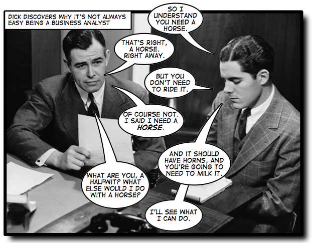
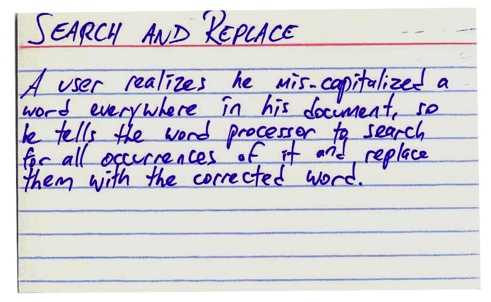

May 3, 2009 by Andrew Stellman
Here’s a question that I get over and over again:
What’s the difference between user stories and use cases?
— Ron K.
Before I dive into an answer to that question, let’s rewind a little bit and talk about where user stories came from. I like them because they’re a great example of how the Agile movement changed the software world. Programmers used to just dive right into software projects and start coding. Whenever one of those pesky users started to tell us what they needed, we’d stop them and say something like, “Don’t worry, I totally get it. I know what you need.” The Agile folks figured out that “I know what you need” is a nasty little trap that programmers — especially good ones — fall into. We’d spend the whole project thinking that we understood our users’ needs, only to deliver software that they didn’t want. The Agile folks realized that if developers had to start working with users throughout the project to understand their needs if they wanted to avoid the code-and-fix trap.
And that’s why I think the user story is one of the most useful tools to come out of the Agile movement. A user story — some people call it a scenario — expresses one very specific need that a user has. It’s usually written out as a couple of sentences. Most user stories are written in the language of the users, so any user should be able to read a user story and immediately understand what it means. A lot of time, user stories are written on index cards, although I’ve put them in Word documents, Excel spreadsheets and Wiki pages (depending on how the particular project is run).
A use case is similar to a user story, because it also describes one specific interaction between the user and the software. When I’m training people to improve the way they write down their project’s requirements, I often describe the use case as a “deceptively simple tool” that helps us find and write down all of the ways users interact with the software.
Looking at those definitions, I can definitely see why there’s confusion about the difference between user stories and use cases. If you look at the last two paragraphs, it might sound like I said the same thing twice! But while user stories and use cases are definitely similar, there are important differences between them. Each serves a distinct purpose, and I think they both have their place on a well-run software project.
I think the easiest way to understand the difference between use cases and user stories is to take a look at an example. Luckily, I’ve got one that I think helps make the difference clearer.
In our first book, Applied Software Project Management, Jenny and I spend a lot of time talking about how to develop use cases and use them to build better software. And as an example, we showed a use case for a software feature that everyone should be familiar with: a search and replace feature from a word processor. Comparing a user story for search and replace with a use case for the same feature helps highlight the differences.
It’s not hard to find lots of user story examples. There are lots of different ways you’ll see a user story formatted (although if you’re looking for a user story template, a 3×5 index card should be a good starting point!). So what would a user story for search and replace look like? I took a stab at writing one:
(One thing I like to do with user stories is to use “he” or “she”, rather than try to be gender-neutral. I think this makes the user in the story easier to connect with by personifying him a bit. It it also lets me write in a more conversational tone, which makes the user story friendlier and, I think, a bit easier to read and understand.)
Now, if you’re not familiar with user stories, you might think to yourself, “Wait a minute, my word processor’s search and replace feature does a lot more than that!” And that’s okay. A typical user story will have enough information to help the user understand what it is the software needs to accomplish, but it’s not meant to be a complete description of how the software works. I’m not going to try to give a long lesson in writing effective user stories here; I highly recommend reading Mike Cohn’s excellent articles and posts aboout user stories. (Mike, incidentally, is one of the software development veterans who contributed to our latest book, Beautiful Teams [O’Reilly, 2009]. He has some really fascinating things to say about Agile planning.)
So what would a use case sample look like for search and replace? Here’s the use case example Jenny and I built to demonstrate how use cases work:
| Name | UC-8: Search and Replace |
|---|---|
| Summary | All occurrences of a search term are replaced with replacement text. |
| Rationale | While editing a document, many users find that there is text somewhere in the file being edited that needs to be replaced, but searching for it manually by looking through the entire document is time-consuming and ineffective. The search-and-replace function allows the user to find it automatically and replace it with specified text. Sometimes this term is repeated in many places and needs to be replaced. At other times, only the first occurrence should be replaced. The user may also wish to simply find the location of that text without replacing it. |
| Users | All users |
| Preconditions | A document is loaded and being edited. |
| Basic Course of Events |
|
| Alternative Paths |
|
| Postconditions | All occurrences of the search term have been replaced with the replacement text. |
Now, if I were a developer building a word processor or text editor, I’d actually be able to write a search and replace feature that implements that particular use case. (Just to be clear: there are many different use case formats; Jenny and I use this use case template in our book because it’s stripped down to the bare minimum sections that we think an effective use case should have.)
Here’s something about use cases that I think is interesting. While you were reading through our use case example, were you thinking of something that looks like the Replace dialog in Notepad or Microsoft Word, or the Find dialog in TextEdit? If so, take another look at the sample use case. It doesn’t have any words like “window,” “button,” “click,” “field” or “checkbox”. It’s all about what actions the user takes, and how the software responds. And there are many different ways that you could build software that implements the use case. Have you ever used the search and replace feature in vi? What about the search and replace feature in Emacs? They have very different user interfaces! Who knew there were so many ways you could implement search and replace? But if you compare each of them with this use case, they all follow the same basic course of events.
So now that we’ve gone through the use case and user story examples, what’s the difference between user stories and use cases? Here’s what I think are some of the key differences:
- User stories are about needs.
- When you write a user story, what you’re describing is a “raw” user need. It’s something that the user needs to do in his day-to-day job. If you never build any software for him, then that need will still exist!
- Use cases are about the behavior you’ll build into the software to meet those needs.
- A developer who needs to build working software should be able to read a use case and get a good sense of what the software needs to do. It typically has a lot of detail, and describes everything that the developer needs to build in order to meet the user’s need. That’s why it needs to have a lot more detail, and be clear and unambiguous.
- User stories are easy for users to read.
- When you write a user story, what you’re concentrating on is writing something that anyone can understand, in the language of the users. We all know that developers have a lot more patience for talking about details of the software they’re building than users do, which is why user stories have to be brief. A user story needs to express a complete thought in just a couple of sentences. (That’s also why it’s good to put them on index cards: somehow, that makes it clearer that it’s self-contained and independent of the other user stories.)
- User cases describe a complete interaction between the software and users (and possibly other systems).
- When you’re doing use case analysis, what you’re doing is designing a functional solution that meets the users’ needs. It needs to be something that developers can implement. It’s possible that one user story could spawn several use cases. And when you combine all of your use cases into one use case document, you’ll end up with a complete description of every interaction between the user and the software that you’re planning on building. And if your software has to interact with multiple systems, you may end up treating those other systems as actors in your use case.
Once you get a sense of how user stories and use cases differ, you can start to see what purpose they can serve on your project. And if you only use user stories, or if you only use cases, then maybe on your next project you can try using them both.